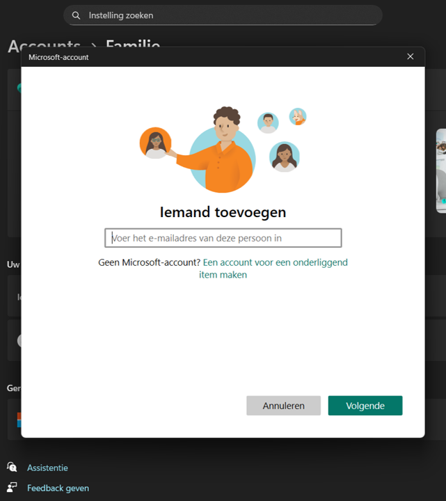

Veelgestelde vragen
Hier vindt u antwoorden op de meest gestelde vragen over onze diensten.
ICT-loket
Moet ik per se een afspraak maken om geholpen te worden door het ICT-loket?
Nee hoor, tijdens openingstijden kun je altijd spontaan binnenlopen bij het ICT-loket. We werken wel bij voorkeur op afspraak, zodat je er zeker van bent dat er genoeg tijd is om je goed te kunnen helpen.
Hoeveel kost het als ik een vraag heb voor het ICT-loket?
Als klant betaalt u wat u het waard vindt. We willen zo laagdrempelig mogelijk werken en daarom is onze dienstverlening gratis. Er staat een fooipotje op de balie. Als je producten aanschaft (zoals een laptop, muis of laptoptas), dan rekenen we daar wel een bedrag voor.
Hebben jullie soms actieprijzen of periodes waarin ik korting kan krijgen op een device?
Wij hebben altijd een zeer scherpe prijs, waardoor wij geen periode hebben met speciale korting.
Cloud & Hosting
What is your return policy?
We accept returns within 30 days of purchase with a valid receipt.
Do you offer international shipping?
Yes, we ship to most countries worldwide.
How can I contact customer support?
You can reach us via email at support@example.com.
Windows Instellingen
Hoe voeg ik een kind-account toe in Windows?

Ga naar Instellingen.Kies Accounts → Gezin & andere gebruikers.
Klik Gezinslid toevoegen.
Kies Kind.
Maak een Microsoft-account voor je kind.
Volg nu de Windows stappen.
Uw vraag niet beantwoord?
Heeft u nog vragen? Neem gerust contact met ons op!